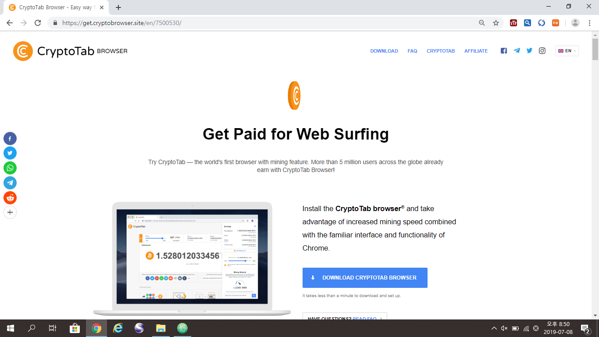
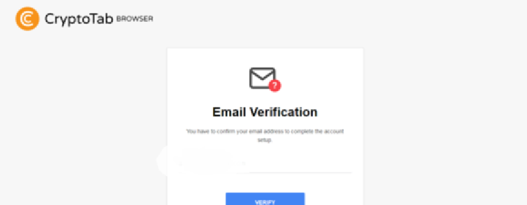
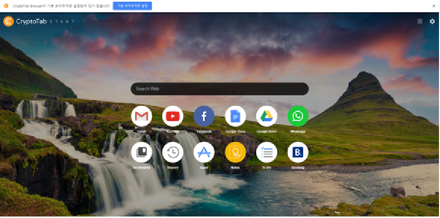
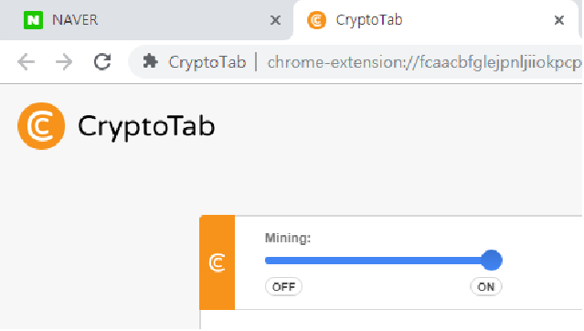

안녕하세요.
오늘은 최근 가격이 매우 상승한 비트코인을 "무료로" 채굴하는 방법을 알려드리겠습니다.
방법은 매우 간단한데요.
먼저 이곳을 클릭 하여 진행합니다.
사이트에 접속하시게되면
빨간 테두리 부분을 클릭하셔서 다운로드 하시면 됩니다.
다운로드를 완료하시면 이런 화면이 나타나는데요
역시 외국 프로그램이다보니 구글로 가입해야합니다
로그인을 완료하신후

VERIFY를 클릭하셔서 이메일 인증을 해주시면 됩니다.
CONFIRM EMAIL를 클릭하셔서 진행하시면 됩니다.
인증을 완료하신뒤 바탕화면을 보시면
사진에 보이시는 아이콘을 찾아서 클릭해주시면
우리가 평상시 사용하는 검색엔진 처럼 생겼습니다.
이 프로그램은 인터넷을 사용함으로서 Bitcoin을 자동으로 채굴하는 프로그램입니다.
이제 마지막으로 채굴기를 가동하셔야 하는데요.
우측 상단의 주황색 아이콘을 클릭!
이걸 ON으로 바꿔주시면 채굴기가 채굴을 시작합니다!
고급정보이니 바로 다운 다운 !